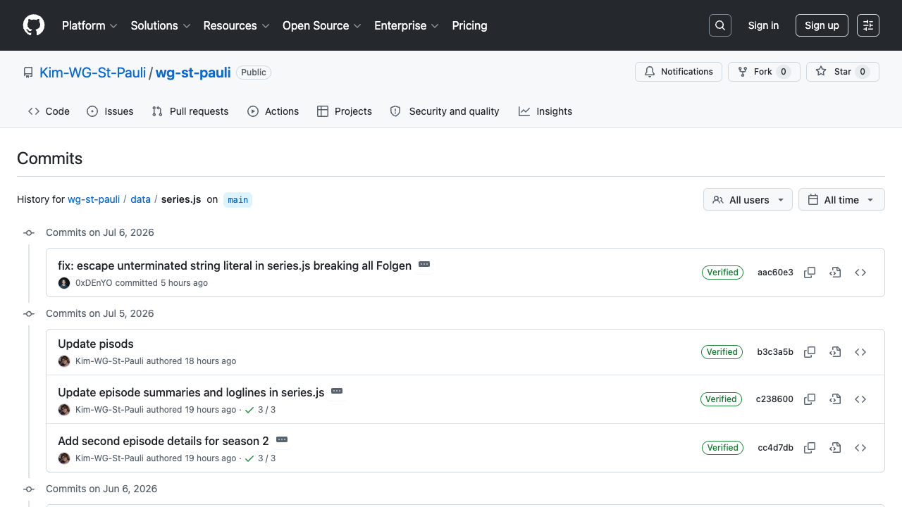
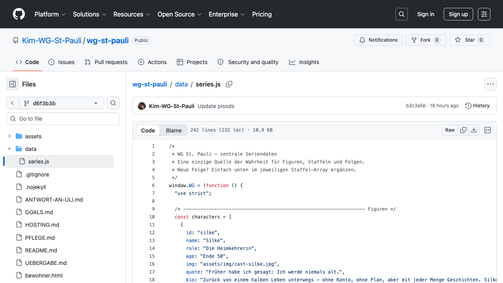

Falls doch mal eine Folge, ein Text oder ein Bewohner nach dem Veröffentlichen falsch aussieht: Hier die genaue Klick-für-Klick-Anleitung, wie du den alten Stand zurückholst. Dauert 2 Minuten, kein Programmieren nötig.
Wichtig zu wissen: Nichts, was du veröffentlichst, überschreibt die Vergangenheit. GitHub speichert jede einzelne Version der Datei für immer. „Rückgängig machen" heißt hier: die alte Version noch einmal ganz normal als neue Änderung speichern. Es ist kein spezieller „Undo"-Knopf, aber es funktioniert genauso zuverlässig.

So sieht die Liste aus (Beispiel-Historie einer anderen Datei) — bei dir stehen oben deine eigenen Änderungen, mit Datum und einer kurzen Beschreibung.
<>).

Das zeigt die Datei genau so, wie sie vor der kaputten Änderung aussah.
Unsicher, welche Version die richtige war? Lieber einmal zu viel nachfragen als etwas falsch zurücksetzen. Schreib dem Helfer kurz mit dem Link zur Historie-Seite (Schritt 1) — er sieht dann sofort, was passiert ist, und sagt dir genau, welche Version die richtige ist.
Bei GitHub gibt es einen Ein-Klick-„Revert"-Knopf nur für Änderungen, die über einen Pull Request gelaufen sind. Da Änderungen aus dem Werkzeug direkt gespeichert werden (ohne Pull Request), fehlt dieser Knopf hier — die Kopieren-und-Einfügen-Methode oben ist der offizielle Weg von GitHub dafür und genauso sicher.